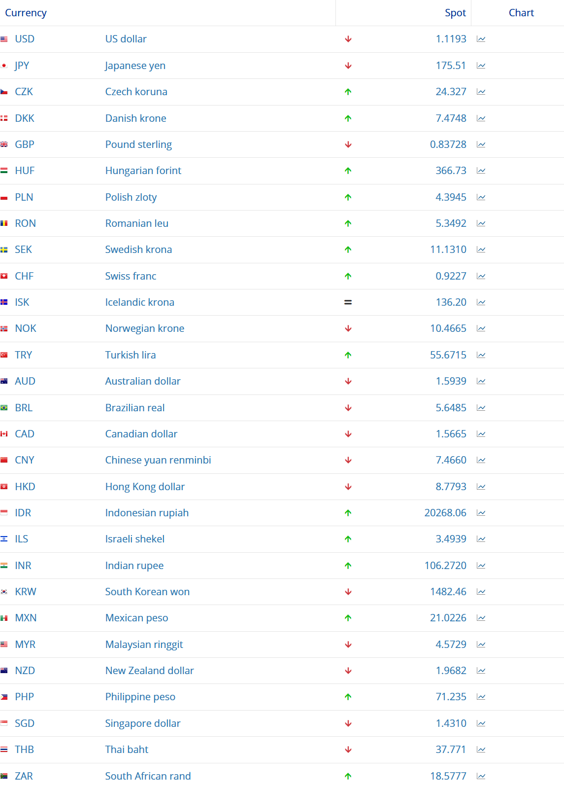
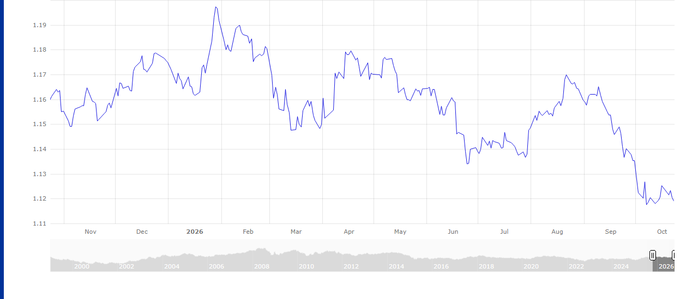
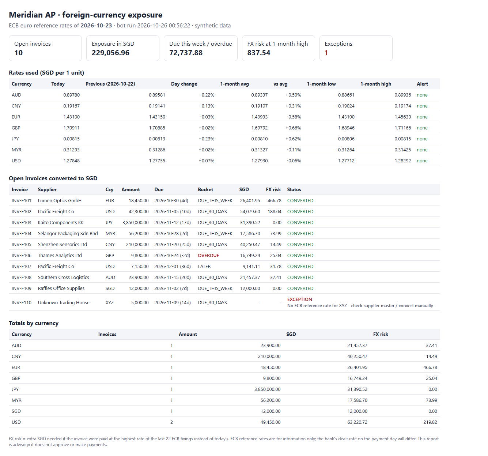
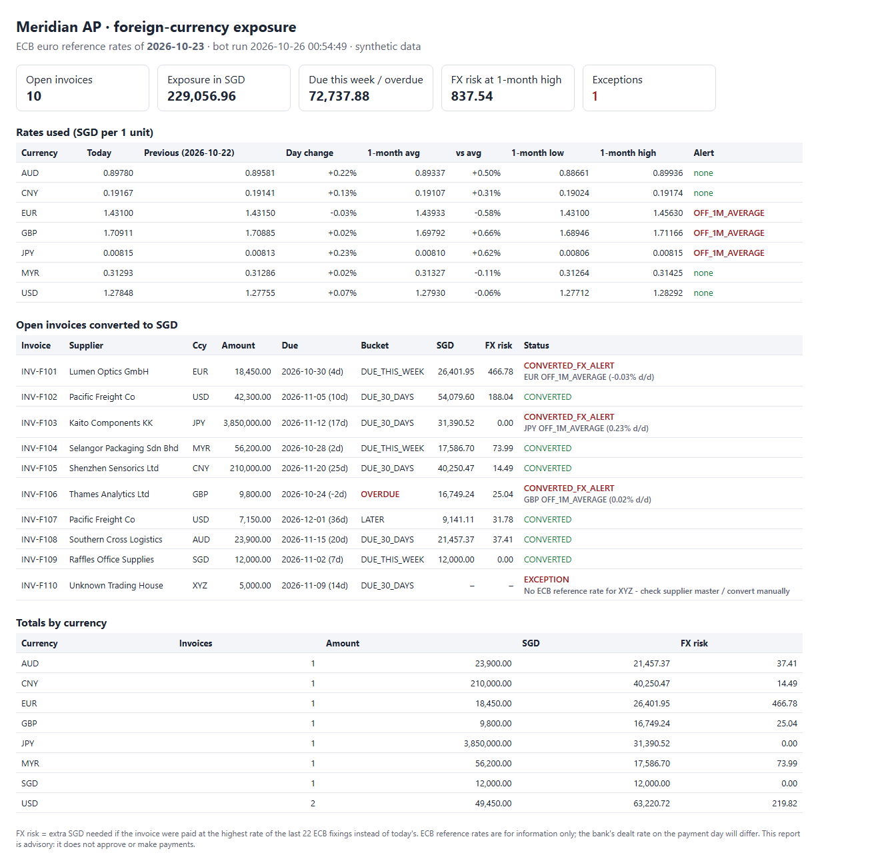

An RPA bot that does a finance team's morning foreign-exchange routine: it reads the European Central Bank's reference rates from the ECB website, keeps a daily rate history, converts every open foreign-currency supplier invoice into SGD, measures the FX risk, raises alerts and saves screenshots as audit evidence. It is built on idea 2 from the brief ("scrape daily FX rates and append to a CSV") and carried through to the accounts-payable task that the rates are needed for.
Meridian (the fictional company used in the Week 10 n8n lab) buys from suppliers in Europe, the US, Japan, Malaysia, China, the UK and Australia, and reports in SGD. Before each payment run an AP analyst:
That takes roughly 20–30 minutes a day, and copy-typing rates is a known source of errors (a JPY rate of 0.008153 is easy to mistype). It is rule-based, repetitive, done in a browser and a spreadsheet, and has no judgement in it until the exceptions: a good fit for RPA.
| Manual (as-is) | Bot (to-be) | |
|---|---|---|
| Time per day | about 20-30 min of analyst time (estimate) | about 82 s unattended (measured) |
| Rates | typed by hand | read from the page's own elements |
| Audit evidence | screenshot if remembered | rate table, page and every chart captured each run |
| History | spreadsheet tab, if kept | CSV appended once per ECB date (re-runs safe) |
| Exceptions | noticed or not | unknown currency, overdue invoice and FX moves written to an alerts file |
| Who decides | analyst | analyst: the bot prepares numbers, it approves nothing |

input/open_invoices.csv (10 synthetic invoices in 7 currencies plus one bad code, XYZ) and
input/bot_settings.csv (alert thresholds the AP team can change without editing the script).//td[@id="USD"]/../td[contains(@class,"spot")]//span[@class="rate"]).
A currency missing from the table (XYZ) is recorded rather than crashing the run.generateChartData(), via a dom step), then screenshots the chart. The chart script sometimes
loads late, so the read is retried up to 5 times; this was added after a real failure during testing.output/fx_rates_history.csv only if that ECB date is not already there.output/run_log.csv.

| Invoice | Supplier | Ccy | Amount | Due | Bucket | SGD | FX risk | Status |
|---|---|---|---|---|---|---|---|---|
| INV-F101 | Lumen Optics GmbH | EUR | 18,450.00 | 2026-10-30 | DUE_THIS_WEEK | 26,401.95 | 466.78 | CONVERTED |
| INV-F102 | Pacific Freight Co | USD | 42,300.00 | 2026-11-05 | DUE_30_DAYS | 54,079.60 | 188.04 | CONVERTED |
| INV-F103 | Kaito Components KK | JPY | 3,850,000.00 | 2026-11-12 | DUE_30_DAYS | 31,390.52 | 0.00 | CONVERTED |
| INV-F104 | Selangor Packaging Sdn Bhd | MYR | 56,200.00 | 2026-10-28 | DUE_THIS_WEEK | 17,586.70 | 73.99 | CONVERTED |
| INV-F105 | Shenzhen Sensorics Ltd | CNY | 210,000.00 | 2026-11-20 | DUE_30_DAYS | 40,250.47 | 14.49 | CONVERTED |
| INV-F106 | Thames Analytics Ltd | GBP | 9,800.00 | 2026-10-24 | OVERDUE | 16,749.24 | 25.04 | CONVERTED |
| INV-F107 | Pacific Freight Co | USD | 7,150.00 | 2026-12-01 | LATER | 9,141.11 | 31.78 | CONVERTED |
| INV-F108 | Southern Cross Logistics | AUD | 23,900.00 | 2026-11-15 | DUE_30_DAYS | 21,457.37 | 37.41 | CONVERTED |
| INV-F109 | Raffles Office Supplies | SGD | 12,000.00 | 2026-11-02 | DUE_THIS_WEEK | 12,000.00 | 0.00 | CONVERTED |
| INV-F110 | Unknown Trading House | XYZ | 5,000.00 | 2026-11-09 | DUE_30_DAYS | - | - | EXCEPTION |
| Run | Started | Rate date | FX alerts | Exceptions | Exposure SGD | History rows added | Seconds | Result |
|---|---|---|---|---|---|---|---|---|
| 1: first run | 2026-10-26 00:51:47 | 2026-10-23 | 0 | 1 | 229,056.96 | 7 | 81.8 | SUCCESS |
| 2: same date again | 2026-10-26 00:53:15 | 2026-10-23 | 0 | 1 | 229,056.96 | 0 | 80.8 | SUCCESS |
| 3: alert test (0.5%) | 2026-10-26 00:54:49 | 2026-10-23 | 3 | 1 | 229,056.96 | 0 | 85.7 | SUCCESS |
| 4: final, normal settings | 2026-10-26 00:56:22 | 2026-10-23 | 0 | 1 | 229,056.96 | 0 | 80.9 | SUCCESS |
Run 2 repeated run 1 on the same ECB date and added no history rows, so the bot can be re-run safely after a failure. Run 3 lowered the off-average threshold to 0.5% to exercise the alert branch (the market was calm, so 2% did not trigger):
| Invoice | Ccy | Status in run 3 | Note |
|---|---|---|---|
| INV-F101 | EUR | CONVERTED_FX_ALERT | EUR OFF_1M_AVERAGE (-0.03% d/d) |
| INV-F103 | JPY | CONVERTED_FX_ALERT | JPY OFF_1M_AVERAGE (0.23% d/d) |
| INV-F106 | GBP | CONVERTED_FX_ALERT | GBP OFF_1M_AVERAGE (0.02% d/d) |

| Rate date | Currency | Units per EUR | SGD per unit | Day change % |
|---|---|---|---|---|
| 2026-10-23 | AUD | 1.5939 | 0.897798 | 0.222 |
| 2026-10-23 | CNY | 7.466 | 0.191669 | 0.134 |
| 2026-10-23 | EUR | 1 | 1.431000 | -0.035 |
| 2026-10-23 | GBP | 0.83728 | 1.709106 | 0.015 |
| 2026-10-23 | JPY | 175.51 | 0.008153 | 0.227 |
| 2026-10-23 | MYR | 4.5729 | 0.312931 | 0.024 |
| 2026-10-23 | USD | 1.1193 | 1.278478 | 0.072 |
| Logged | Ccy | Type | Detail | Message |
|---|---|---|---|---|
| 2026-10-26 00:51:47 | GBP | OVERDUE_INVOICE | INV-F106 | Thames Analytics Ltd was due 2026-10-24 |
| 2026-10-26 00:51:47 | XYZ | INVOICE_EXCEPTION | INV-F110 | No ECB reference rate for XYZ - check supplier master / convert manually |
| 2026-10-26 00:53:15 | GBP | OVERDUE_INVOICE | INV-F106 | Thames Analytics Ltd was due 2026-10-24 |
| 2026-10-26 00:53:15 | XYZ | INVOICE_EXCEPTION | INV-F110 | No ECB reference rate for XYZ - check supplier master / convert manually |
| 2026-10-26 00:54:49 | EUR | FX_MOVE | OFF_1M_AVERAGE | SGD per EUR moved -0.03% vs 2026-10-22, -0.58% vs 1-month average |
| 2026-10-26 00:54:49 | JPY | FX_MOVE | OFF_1M_AVERAGE | SGD per JPY moved 0.23% vs 2026-10-22, 0.62% vs 1-month average |
| 2026-10-26 00:54:49 | GBP | FX_MOVE | OFF_1M_AVERAGE | SGD per GBP moved 0.02% vs 2026-10-22, 0.66% vs 1-month average |
| 2026-10-26 00:54:49 | GBP | OVERDUE_INVOICE | INV-F106 | Thames Analytics Ltd was due 2026-10-24 |
| 2026-10-26 00:54:49 | XYZ | INVOICE_EXCEPTION | INV-F110 | No ECB reference rate for XYZ - check supplier master / convert manually |
| 2026-10-26 00:56:22 | GBP | OVERDUE_INVOICE | INV-F106 | Thames Analytics Ltd was due 2026-10-24 |
| 2026-10-26 00:56:22 | XYZ | INVOICE_EXCEPTION | INV-F110 | No ECB reference rate for XYZ - check supplier master / convert manually |
The bot's figures come from scraping web pages, so a second, independent route was used to check them: the ECB also publishes the same
rates as an XML file for machines. tools/verify_against_ecb_xml.py downloads it, recomputes every SGD amount and FX-risk figure,
and compares them with the bot's CSV.
Checking ap_fx_exposure_2026-10-23.csv against https://www.ecb.europa.eu/stats/eurofxref/eurofxref-hist-90d.xml Reference date 2026-10-23; 1-month window 2026-09-24 .. 2026-10-23 (22 fixings) INV-F101 EUR 18,450.00 SGD bot 26,401.95 / feed 26,401.95 risk bot 466.78 / feed 466.78 OK INV-F102 USD 42,300.00 SGD bot 54,079.60 / feed 54,079.60 risk bot 188.04 / feed 188.04 OK INV-F103 JPY 3,850,000.00 SGD bot 31,390.52 / feed 31,390.52 risk bot 0.00 / feed 0.00 OK INV-F104 MYR 56,200.00 SGD bot 17,586.70 / feed 17,586.70 risk bot 73.99 / feed 73.99 OK INV-F105 CNY 210,000.00 SGD bot 40,250.47 / feed 40,250.47 risk bot 14.49 / feed 14.49 OK INV-F106 GBP 9,800.00 SGD bot 16,749.24 / feed 16,749.24 risk bot 25.04 / feed 25.04 OK INV-F107 USD 7,150.00 SGD bot 9,141.11 / feed 9,141.11 risk bot 31.78 / feed 31.78 OK INV-F108 AUD 23,900.00 SGD bot 21,457.37 / feed 21,457.37 risk bot 37.41 / feed 37.41 OK INV-F109 SGD 12,000.00 SGD bot 12,000.00 / feed 12,000.00 risk bot 0.00 / feed 0.00 OK INV-F110 XYZ: not an ECB currency -> bot status EXCEPTION OK 10 invoices checked, 0 mismatches -> PASS
read step with an error instead of producing a zero; an unknown currency becomes an
EXCEPTION row for a person to handle.TagUI's last release (v6.110, June 2022) does not run as shipped on Windows 11 25H2 with Chrome 156. Five fixes were needed, now packaged
as tools/patch_tagui_2026.ps1 (tested on the original files, safe to re-run):
--remote-allow-origins=*: TagUI hung at "listening for inputs".wmic.exe has been removed from Windows 11; TagUI used it to find and close its Chrome. Replaced with a PowerShell helper.casperjs but the Windows package ships casperjs.exe: "'casperjs' is not recognized".find /i resolved to Git's Unix find and scanned the C: drive. Pinned to Windows' find.exe.In the flow itself: TagUI wraps each step in its own function, so helper functions had to be global; Chrome blocks a web page from opening a
local file:// report, so the report HTML is written into a blank tab instead; and the chart-data read got a retry loop.
read steps (loudly); the XML check would catch a silent change.Files: fx_ap_bot.tag (script), run_bot.cmd, input/, output/, evidence/,
tools/. All invoice data is synthetic; exchange rates are real ECB reference rates.